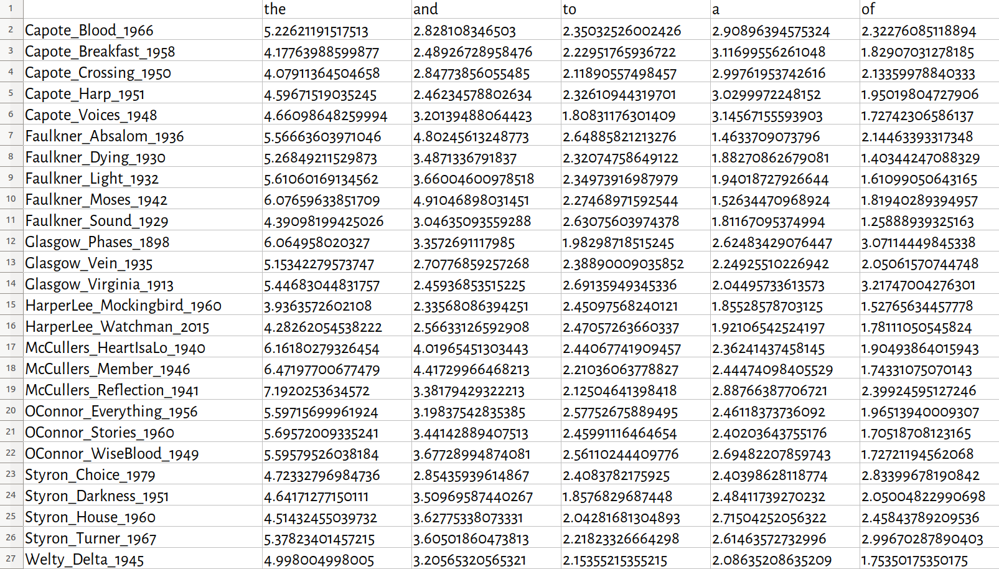
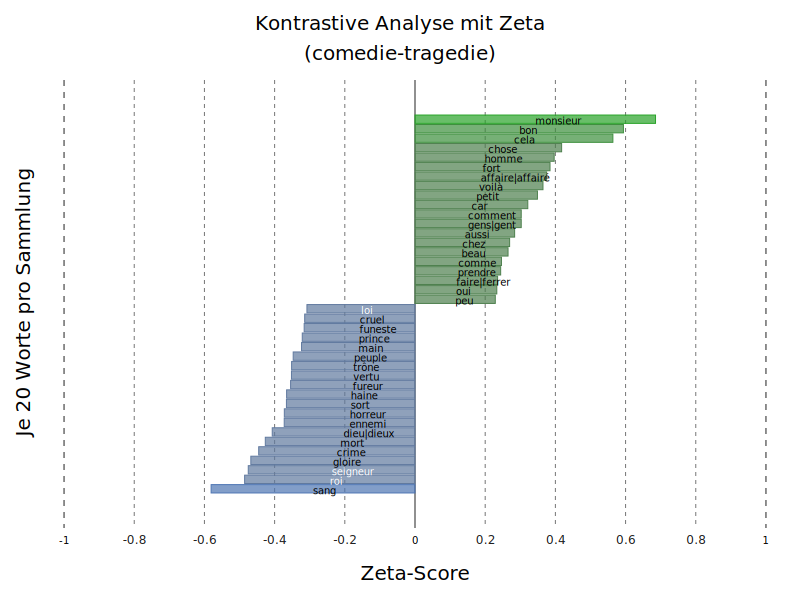

<!doctype html>
<html lang="en">
<head>
<meta charset="utf-8">
<!-- CUSTOMIZE THIS! -->
<title>TDM+R 2019</title>
<meta name="author" content="Christof Schöch">
<!-- END -->
<meta name="description" content="Slides">
<meta name="apple-mobile-web-app-capable" content="yes">
<meta name="apple-mobile-web-app-status-bar-style" content="black-translucent">
<meta name="viewport" content="width=device-width, initial-scale=1.0, maximum-scale=1.0, user-scalable=no, minimal-ui">
<link rel="stylesheet" href="css/reveal.css">
<link rel="stylesheet" href="css/theme/simple.css" id="theme">
<!-- Code syntax highlighting -->
<link rel="stylesheet" href="lib/css/zenburn.css">
<!-- Printing and PDF exports -->
<script>
var link = document.createElement( 'link' );
link.rel = 'stylesheet';
link.type = 'text/css';
link.href = window.location.search.match( /print-pdf/gi ) ? 'css/print/pdf.css' : 'css/print/paper.css';
document.getElementsByTagName( 'head' )[0].appendChild( link );
</script>
<!--[if lt IE 9]>
<script src="lib/js/html5shiv.js"></script>
<![endif]-->
</head>

<body>
<div class="reveal">
<div class="slides">
<section data-markdown="" data-separator="^\n---\n" data-separator-vertical="^\n--\n" data-charset="utf-8" data-background-image="img/basics/uni-trier-icon.png" data-background-size="50px" data-background-position="top 10px right 10px">
<script type="text/template">

<!-- THIS IS WHERE THE CONTENT GOES! -->
<!-- Any section element inside of this container is displayed as a slide -->

##Analysemethoden und Datenformate in den Computational Literary Studies
<br/>
<hr/>
<br/>
Christof Schöch (Trier)
<br/>
<br/>
**Workshop 'Strategien für die Nutzbarmachung urheberrechtlich geschützter Textbestände für die Forschung durch Dritte', 28. November 2019, Trier**
<br/>
<br/>
<hr/>
</img>


---
<br/>
<br/>
# 1. Einleitung

--
# Überblick
<br/>
1. [Einleitung](#/3)
1. [Existierende Datensätze / Formate](#/3)
2. [Analysemethoden der CLS](#/4)
3. [Fazit](#/5)
4. [Begrifflichkeiten](#/11)
5. [Textformate](#/12)
6. [Evaluation](#/13)


--
## Ausgangslage
<br/>
* Das "window of opportunity" für TDM in den CLS:<br/>1800-1923/1948 (USA: Publikation / EU: Tod des Autors); damit:
    * Ausreichend große Mengen an gut digitalisierten Texten (Produktion, OCR)
    * Gemeinfrei für die Republikation von Datensätzen (Copyright)
    * Nur hier: Benchmark-Datensätze, Reproduzierbarkeit, SotA

--
## Leitfragen
<br/>
1. Welche Analysemethoden sind in den CLS weit verbreitet?
2. Welche Informationen sind für die Anwendung dieser Methoden notwendig?
3. Welche von urheberrechlich geschützten Texten abgeleiteten Datenformate sind dafür geeignet?


---
<br/>
<br/>
# 2. Existierende Datensätze / Formate

--
<a href="img/cangs.png"></a>
<p>CrossAsia N-Gram Service<br/>https://analytics.hathitrust.org/datasets</p>

--
<a href="img/cangs-txt.png"></a>
<p>CrossAsia N-Gram Service<br/>https://analytics.hathitrust.org/datasets</p>

--
<a href="img/csg.png"></a>
<p>Stylo for R Datasets<br/>https://github.com/computationalstylistics/stylo/tree/master/data</p>

--
<a href="img/lee-tdm.png"></a>
<p>Stylo for R Datasets<br/>https://github.com/computationalstylistics/stylo/tree/master/data</p>

--
<a href="img/htrc.png"></a>
<p>HathiTrust Extracted Features Dataset<br/>https://analytics.hathitrust.org/datasets</p>

--
<a href="img/htrc2.png"></a>&nbsp;&nbsp;<a href="img/htrc1.png"></a>
<p>HathiTrust Extracted Features Dataset<br/>https://analytics.hathitrust.org/datasets</p>


---
<br/>
<br/>
# Vorschlag für ein<br/>abgeleitetes Datenformat

--
## Eigenschaften
<br/>
* Datenstruktur 
    * Term-Dokument-Matrix oder (JSON-Datei)
    * 1 Text = 1 Datei
* Segmentierung 
    * kleinteilig, bspw. 100 / 500 Wörter
    * kleine Segmente => Sparseness, Dateigröße
* Merkmale 
    * Wortform, POS, Lemma: Häufigkeit pro Segment
    * Disambiguieren / Filtern / Aggregieren
* Rekonstruierbarkeit des Textes: eindeutig ausgeschlossen


--
## Beispiel: Michel Jeury, *Le Monde du Lignus*

<p>Ausschnitt aus einer Term-Dokument-Matrix</p>


--
## Mögliche Erweiterungen
<br/>
* Weitere Attribute eines Tokens, bspw.: "in direkter Rede"
* Analog auch für N-Gramme denkbar (aber: Sparseness)
* Auch als JSON-Datei implementierbar


--
## Dazu reichhaltige Metadaten
<br/>
* Jahr der Erstveröffentlichung
* Autor inkl. VIAF/GND (oder Attribute)
* Textlänge
* Vers oder Prosa
* Großgattung (narrativ, dramatisch, lyrisch)
* narrative Prosa: Erzählform, Dialoganteil


---
<br/>
<br/>
# Analysemethoden


--
## Analysemethoden im Überblick
<br/>
* Autorschaftsattribution
* Topic Modeling
* Distinktive Merkmale
* Text Reuse
* Netzwerkanalyse
* Word Embedding Models 
* Metaphernerkennung
* ...


---
<br/>
<br/>
# Autorschaftsattribution

--
## Autorschaftsattribution: Beispiel
<a href="img/ratineaud.png"></a>
<p>Pierre Ratinaud 2018, "The Brilliant Friend(s) of Elena Ferrante"</p>

--
## Autorschaftsattribution: How it works
<br/>
* Prinzip: Textähnlichkeit, d.h.: bag-of-words, Vektorraum, Distanzmaße
* Parameter: Segmentierung, Liste der Merkmale, (Distanzmaß)

--
## Autorschaftsattribution: Datenformat
<br/>
* Datenformat: Term-Dokument-Matrix
* Merkmale (einfachster Fall): Worthäufigkeiten pro Gesamtdokument (1-Gramme)
* Segmentierung: optional, aber nicht unüblich
* Wortliste: in Abhängigkeit der Häufigkeit im Korpus
* Fazit: mit vorgeschlagenem Format problemlos möglich


---
<br/>
<br/>
# Topic Modeling

--
## Topic Modeling: Beispiel
<a href="http://signsat40.signsjournal.org/topic-model/"></a>
<p>Mazzaschi et al. 2014, Signs@40</p>

--
## Topic Modeling: How it works
<br/>
* Umfangreiche Textbestände
* Probabilistische Identifikation von Wörtern, die immer wieder gemeinsam auftreten
* Topics ~ Themen, deren Verteilung untersucht wird (Autoren, Jahre, Gattungen)
* Parameter: Segmentierung, Wortliste, (Topic-Anzahl)


--
## Topic Modeling: Datenformat
<br/>
* Datenformat: Term-Dokument-Matrix
* Merkmale: binarisierte Häufigkeit; Lemmas nach POS gefiltert / Stopwords; kleine Textabschnitte
* Fazit: etwas mehr Preprocessing, dennoch problemlos


---
<br/>
<br/>
# Distinktive Merkmale


--
## Distinktive Merkmale: Beispiel
<a href="img/zetascores_comedie-tragedie_1000-lemmata-all.svg"></a>
<p>Distinktive Wörter in Komödien und Tragödien (Schöch 2017)</p>

--
## Distinktive Merkmale: How it works
<br/>
* Vielzahl von Verfahren, von einfach bis komplex
* Avancierte Verfahren: 
    * vergleichen den Grad der Dispersion
    * hierfür ist Segmentierung notwendig


--
## Anforderungen an das Datenformat
<br/>
* Wortformen, Lemmata oder POS
* POS-basierte Selektion
* binarisierte Segment-Häufigkeit
* Fazit: mit etwas Preprocessing möglich 

---
<br/>
<br/>
# Text Reuse

--
## Text Reuse: Beispiel
<a href="img/pvierth-reuse.jpg"></a>
<p>Text Reuse zwischen zwei chinesischen Romanen: The Water Margin (oben), und The Plum in the Golden Vase (unten); Paul Vierthaler 2019</p>

--
## Text Reuse: Beispiel
<a href="img/reuse18a.png"></a>
<p>Text reuse zwischen Louis LeComte (1696, links) und Marquis d'Argens (1738, rechts); Horton et al. 2010</p>

--
## Text Reuse: How it works
<br/>
* Prinzip: Paarweiser Abgleich kurzer Tokensequenzen
<br/>
<br/>
* (1) Indexierung jedes Textes (ohne Stopwords)
* (2) Identifikation von Matches zwischen Texten, mit Toleranz
* (3) Matches werden aligniert und expandiert, mit Toleranz

--
## Beispiel
<br/>
>L'**homme** est né **libre**, et **partout** il est dans les **fers**. Tel se **croit** le **maître** des autres, qui ne **laisse** pas d'étre plus **esclave** qu'eux. (Rousseau)

<small>
    
| trigram                  | doc | sequence| bytes   |
|--------------------------|-----|---------|---------|
|homme_libre_partout       | 755 | 208-213 | 5084-31 |
|libre_partout_fers        | 755 | 211-218 | 5098-38 |
|partout_fers_croit        | 755 | 213-221 | 5108-46 |
|fers_croit_maitre         | 755 | 218-223 | 5132-33 |
|croit_maitre_laisse       | 755 | 221-228 | 5149-42 |
|maitre_laisse_esclave     | 755 | 223-233 | 5158-58 |

</small>


--
## Andere Anforderungen
<br/>
* Index der n-Gramme: denkbar, hier nur nicht-Stopwords zu berücksichtigen
* Expandieren der Matches: längere, zusammenhängende Abschnitte 
* Prüfen der Treffer: eigentlich nur im Volltext möglich

---
<br/>
<br/>
# 4. Fazit


--
## Methoden mit Token-basiertem Format ✔
<br/>
* ✔ Autorschaftsattribution: Segmentaggregation, Gesamthäufigkeit 
* ✔ Topic Modeling: Stopwords teilweise Segmentaggregation, Binarisierung, POS-Filter, Lemma-Auswahl
* ✔ Distinktive Merkmale: teilweise Segmentaggregation, Lemma-Auswahl
* (✔ Netzwerkanalyse: möglich, wenn Annotation geeignet ist: Figurennamen)

--
## Andere Methoden: sequentielles Format
<br/>
* ❌ Text Re-Use: benötigt mehr Kontext
* ❌ Word Embeddings: benötigt mehr Kontext
* ❌ Metaphernerkennung: benötigt mehr Kontext


---
## Bibliographie
<br/>

<small>

* Pierre Ratinaud (2018), "The Brilliant Friend(s) of Elena Ferrante". *Drawing Elena Ferrante’s Profile*. Padova: Padova University Press. http://www.padovauniversitypress.it/publications/9788869381300. 
* Christof Schöch (2018), "Zeta für die kontrastive Analyse literarischer Texte
Theorie, Implementierung, Fallstudie", *Quantitative Ansätze in den Literatur- und Geisteswissenschaften: Systematische und historische Perspektiven*. Berlin: de Gruyter, 77–94. 
* Paul Vierthaler and Mees Gelein, "A BLAST-based, Language-agnostic Text Reuse Algorithm with a MARKUS Implementation and Sequence Alignment Optimized for Large Chinese Corpora," *Journal of Cultural Analytics*. March 18, 2019. DOI: https://doi.org/10.31235/osf.io/7xpqe
* Andrew Mazzaschi et al. (2014): *Signs@40: Feminist Scholarship through Four Decades*, http://signsat40.signsjournal.org/topic-model/.
* Russell Horton, Mark Olsen, Glenn Roe (2010), "Something Borrowed: Sequence Alignment and the Identification of Similar Passages in Large Text Collections", *Digital Studies - Le Champ numérique* 2.1., URL: https://www.digitalstudies.org/articles/10.16995/dscn.258/

</small>


---
<br/>
<br/>
# 5. Begrifflichkeiten

--
### Textbeispiel (plain text)
<a href="img/en-plain-example.png"></a>

--
### Textbeispiel (annotiert; tsv)
<a href="img/en-example-annotated.png"></a>

--
### Type und Token
<br/>
* Token: jede einzelne Texteinheit (definitionsabhängig; üblicherweise Worte und Interpunktion) <!-- .element: class="fragment" data-fragment-index="1" -->
* Type: jedes unterschiedliche Token (Kontext: Häufigkeit) <!-- .element: class="fragment" data-fragment-index="2" -->

--
### Beschreibung der Token
<br/>
* Wortform: die Zeichensequenz eines Tokens:<br/>"having", "New York Times", "!" <!-- .element: class="fragment" data-fragment-index="1" -->
* Lemma: die zur Wortform gehörige Grundform:<br/>having => (to) have <!-- .element: class="fragment" data-fragment-index="2" -->
* Wortart / POS: die zur Wortform gehörige grammatikalische Klasse<br/>having => VERB  <!-- .element: class="fragment" data-fragment-index="3" -->
* jedes Token kann weitere Annotationen tragen<br/>bspw. semantische Klasse, syntaktische Rolle, Wortvektor <!-- .element: class="fragment" data-fragment-index="4" -->

--
### Einheiten
<br/>
* Token
* Satz
* Segment (Länge in Token?)
* Gesamttext


---
<br/>
<br/>
# 6. Definition abgeleiteter Textformate

--
### Ziele
<br/>
1. Möglichst viel Information beibehalten <!-- .element: class="fragment" data-fragment-index="1" -->
2. Möglichst viele Analyseverfahren unterstützen <!-- .element: class="fragment" data-fragment-index="2" -->
3. Möglichst klar urheberrechtliche Unbedenklichkeit sicherstellen <!-- .element: class="fragment" data-fragment-index="3" -->
4. Möglichst wenige unterschiedliche Textformate definieren <!-- .element: class="fragment" data-fragment-index="4" -->
5. Möglichst einfach zu erstellende und zu nutzende Textformate <!-- .element: class="fragment" data-fragment-index="5" -->

--
### Grundidee: Informationsselektion
<br/>
* Ein abgeleitetes Textformat lässt sich wesentlich dadurch beschreiben, dass man die gegenüber dem Ausgangstext beibehaltene, reduzierte oder entfernte Information charakterisiert 

--
### Token-basierte Informationen
<br/>
* Wortform
* Lemma
* Wortart
* Bedeutung 
* syntaktische Rolle

--
### Sequenzinformation
<br/>
* Position vs. Reihung
* Token im Satz, Segment, Text
* Satz im Segment, Text
* Segment im Text

--
### Häufigkeitsinformation
<br/>
* Häufigkeit der Types
    * bezogen auf Satz, Segment oder Text
    * als binäre, absolute oder relative Häufigkeit

--
### Abgeleitete Texformate
<br/>
* welche Informationen bleiben erhalten?
* welche Informationen werden reduziert oder entfernt?
* welche Analyseverfahren werden unterstützt?
* wie klar urheberrechtlich unbedenklich ist das Format?

---
<br/>
<br/>
# 7. Beispielhafte Textformate


--
### Transformierte Tokens
<a href="img/en-tkn-lemma.png"></a>
<br/>Wortform entfernt
<br/>Sequenz und Häufigkeit erhalten
<br/>Parameter: welche Annotation(en)


--
### Transformierte Tokens mit Selektion
<a href="img/en-tkn-lemma.png"></a>
<br/>Wortform und bestimmte Tokens entfernt
<br/>Reihung und Häufigkeit erhalten
<br/>Parameter: welche Annotation(en); Platzhalter-Tokens


--
### Einfache Term-Dokument-Matrix
<a href="img/en-frq-original.png"></a>
<br/>Parameter: welche Annotation(en)


--
### Segment-basierte Term-Dokument-Matrix
<a href="img/en-tdm-seg-ann.png"></a>
<br/>Parameter: welche Annotation(en); Segmentlänge


--
### Tokens mit segment-basiert gestörter Sequenz
<a href="img/en-src-10.png"></a>
<br/>Tokensequenz im Segment entfernt
<br/>Segmentsequenz im Text erhalten 
<br/>Volle Tokeninformation erhalten
<br/>Parameter: welche Annotationen; Segmentlänge


--
### Ngramme mit POS-Filter
<a href="img/en-hp-ngram-4.png"></a>
<br/>Tokenreihung erhalten
<br/>Funktionswörter gelöscht, Inhaltswörter erhalten
<br/>Nur Lemmainformation erhalten
<br/>Parameter: N-Gramm-Länge; Annotation(en)

--
### Harry Potter Demo
<br/>
* Harry Potter and the Sorcerer's Stone, ch. 11 (Quidditch)
* Abgeleitete Formate: siehe Dropbox-Link

---
<br/>
<br/>
# 7. Evaluation

--
### Grundidee
<br/>
* Evaluation von Methoden auf Ausgangsformat vs. abgeleitete Formate  <!-- .element: class="fragment" data-fragment-index="1" -->
* empirische Basis für Auswahl von Textformaten <!-- .element: class="fragment" data-fragment-index="2" -->
* Nachweis für deren Nützlichkeit <!-- .element: class="fragment" data-fragment-index="3" -->


--
### Beispiel Autorschaftsattribution
<br/>
* Zuordnung von Texten zu ihren Autor*innen <!-- .element: class="fragment" data-fragment-index="1" -->
* Prinzip: Textähnlichkeit <!-- .element: class="fragment" data-fragment-index="2" -->
* Textähnlichkeit: nach Worthäufigkeit <!-- .element: class="fragment" data-fragment-index="3" -->
* Methoden: <!-- .element: class="fragment" data-fragment-index="4" -->
    * Distanz im Vektorraum
    * Machine Learning 

--
### Illustration: Clustering nach Textähnlichkeit
<a href="img/plain_CA_2000_MFWs_Culled_0__wurzburg__001.png"></a>

--
### Vergleich nach Textformat
<br/>
* Drei Formate <!-- .element: class="fragment" data-fragment-index="1" -->
    * Ausgangsformat (plain text)
    * Textformat 1: Lemmata
    * Textformat 2: POS
* Parameter <!-- .element: class="fragment" data-fragment-index="2" -->
    * SVM (Lernalgorithmus für Klassifikation) 
    * bis 500 Merkmale / 200 Merkmale / 30 Merkmale

--
### Ergebnisse
<a href="img/overview-of-results.png"></a>


---
<br/>
<br/>
<br/>
## Danke!
<br/>
<br/>
<br/>
<br/>
<br/>
<br/>
<br/>
<hr/>
<p>Christof Schöch, 2019</p>
<p><a href="https://christofs.github.io/">christofs.github.io</a></p>
<p><a href="https://creativecommons.org/licenses/by/4.0/">CC-BY 4.0</a><br/></p>
<hr/>
<br/>
<br/>
</script>
</section>


<!-- DON'T TOUCH UNLESS YOU KNOW WHAT YOU'RE DOING :-) -->
</div>
<script src="lib/js/head.min.js"></script>
<script src="js/reveal.js"></script>
<script>
// Full list of configuration options available at:
// https://github.com/hakimel/reveal.js#configuration
Reveal.initialize({
    controls: true,
    progress: true,
    history: true,
    center: true,
    transition: 'slide', // none/fade/slide/convex/concave/zoom
    // Optional reveal.js plugins
    dependencies: [
        { src: 'lib/js/classList.js', condition: function() { return !document.body.classList; } },
        { src: 'plugin/markdown/marked.js', condition: function() { return !!document.querySelector( '[data-markdown]' ); } },
        { src: 'plugin/markdown/markdown.js', condition: function() { return !!document.querySelector( '[data-markdown]' ); } },
        { src: 'plugin/highlight/highlight.js', async: true, callback: function() { hljs.initHighlightingOnLoad(); } },
        { src: 'plugin/zoom-js/zoom.js', async: true },
        { src: 'plugin/notes/notes.js', async: true }
        ]
    });
</script>
</body>
</html>
